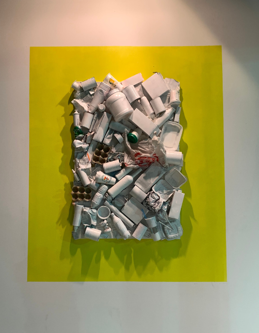
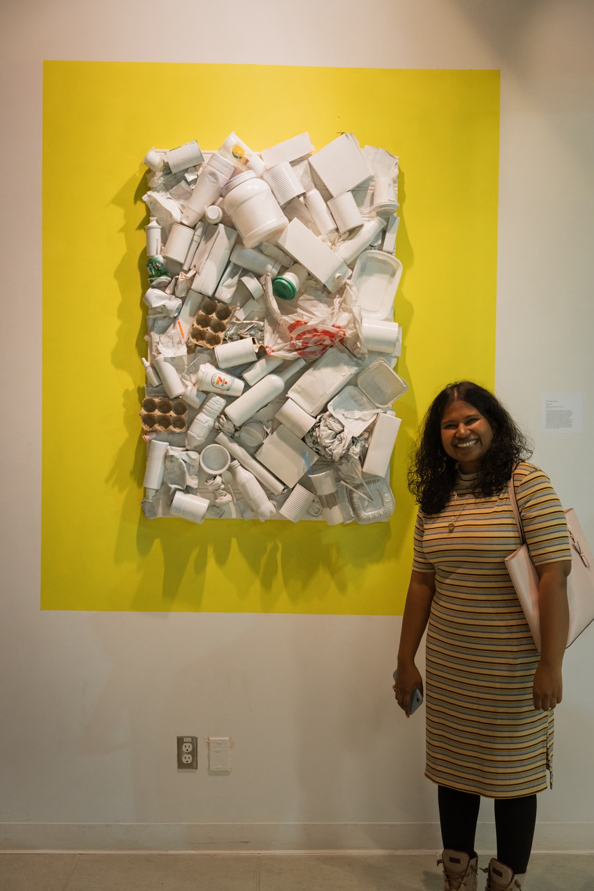
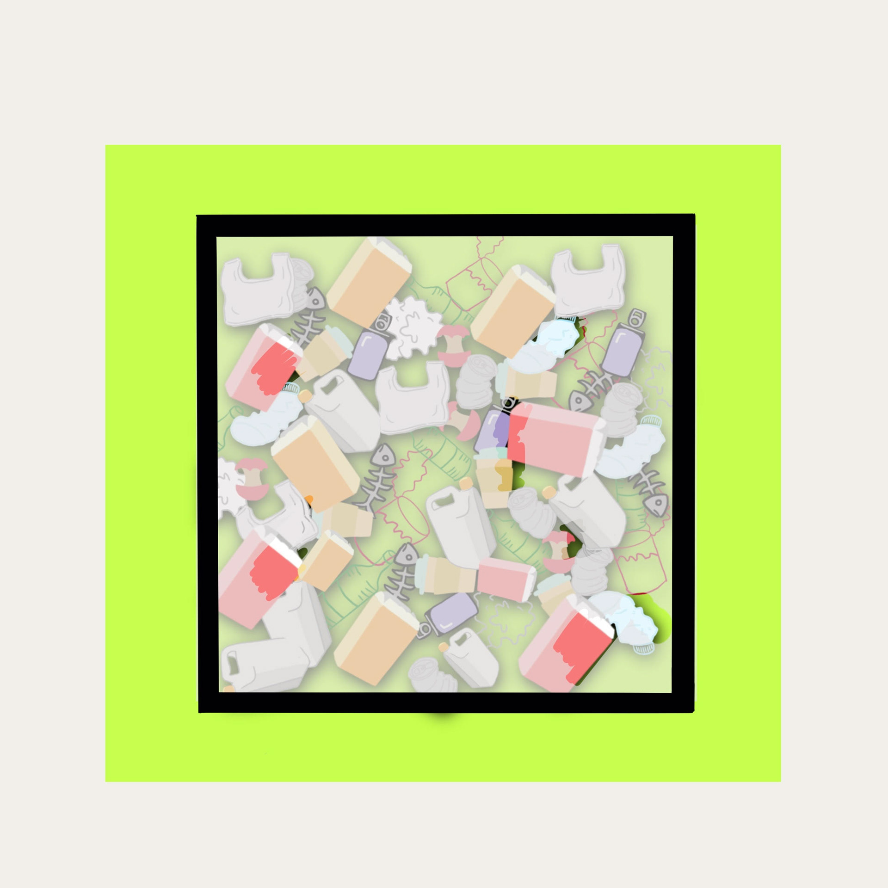
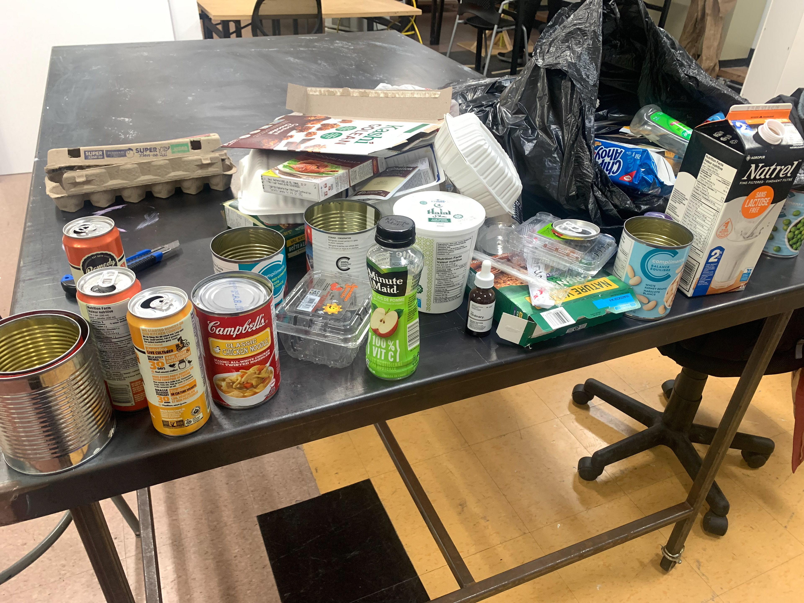
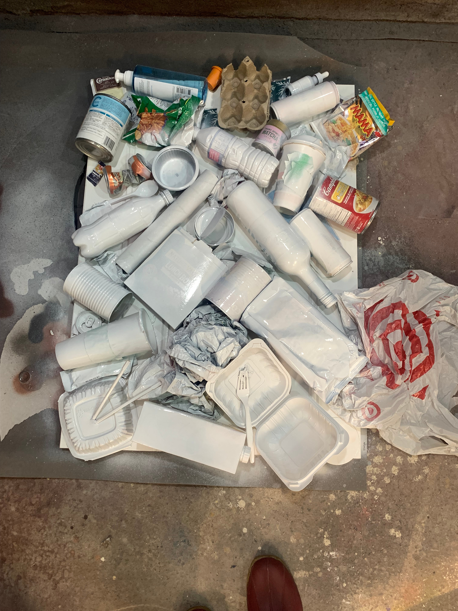
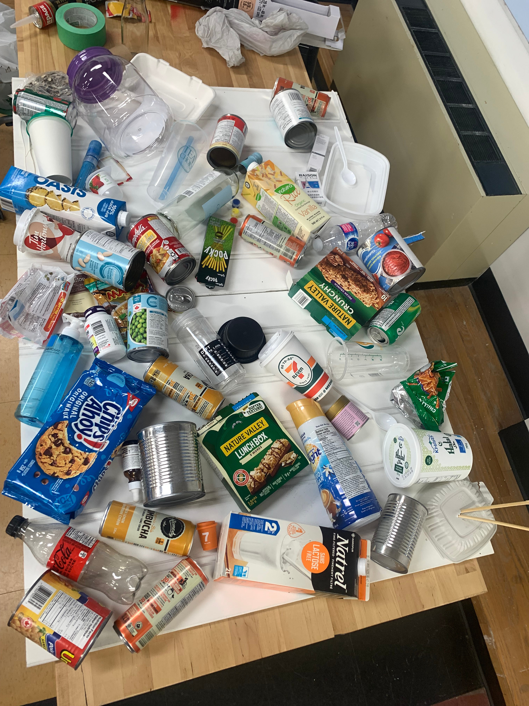
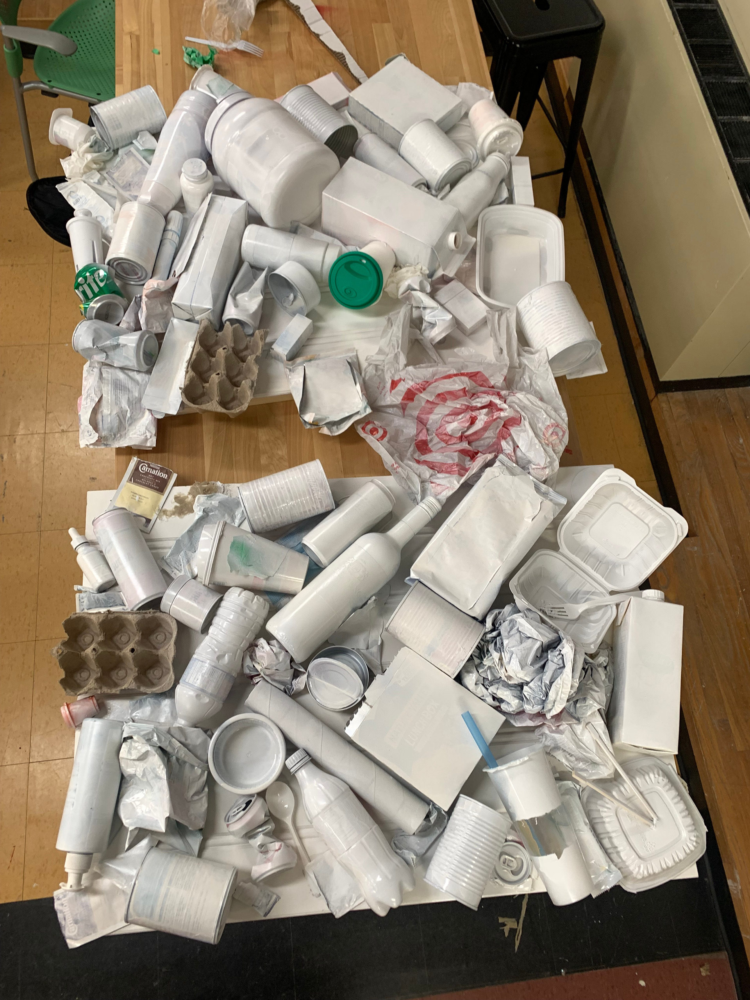

Memories with Furniture
This project began with a personal experience: my desire to preserve my grandfather's old rosewood study desk and the profound memories it holds for me. I envisioned it as a cherished piece in my future home. Initially, I conceived the project as an aesthetically interactive space, featuring a cardboard couch facing a wall of displays. Passersby could engage with the installation by writing or doodling on the wall. However, as the project evolved, it took on a more speculative nature.
Ultimately, I crafted an exposed cardboard couch alongside a memory wall where visitors could share their own experiences and memories associated with furniture. Despite initial hesitation due to the positioning of the couch and concerns about its sturdiness, people were pleasantly surprised by the level of comfort it offered. This unexpected revelation highlighted the potential for inexpensive materials like cardboard to provide comfort and functionality in furniture design.






